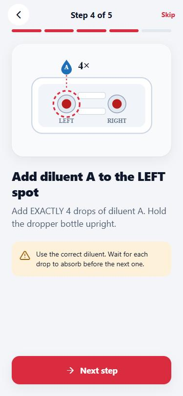
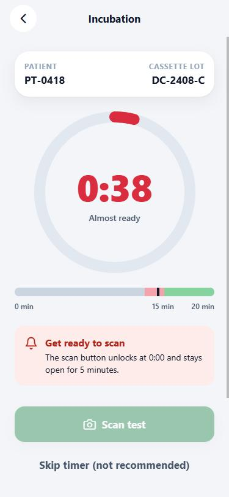
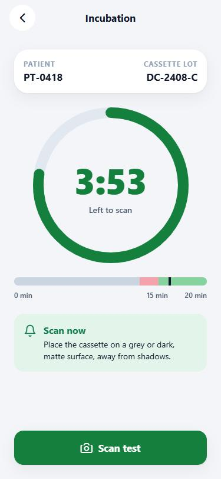
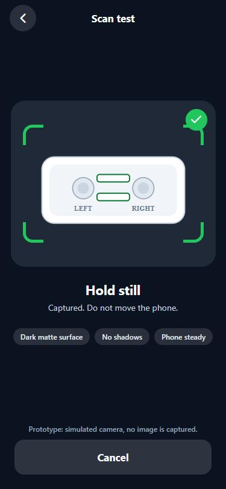
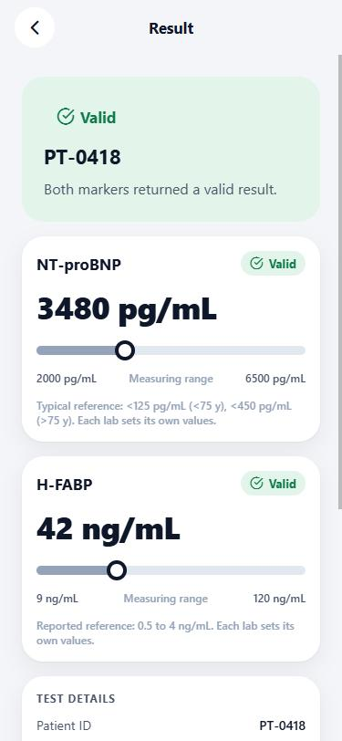

| 7.1 | Four-slide tutorial, skip, "don't show again" |
| 7.2 | Lot and patient ID, five guided steps |
| 7.3 | 15 min timer, red at 13 min, 5 min scan window, timed-out state, skip with confirmation |
| 7.3 | Alignment grid, auto-scan (simulated) |
| 7.4 | Valid / Invalid / Incomplete, units, limit display, 30-day auto-delete |
| 8 | About: support, privacy, terms, regulatory (inert) |
| + | English and Spanish, switch in About |